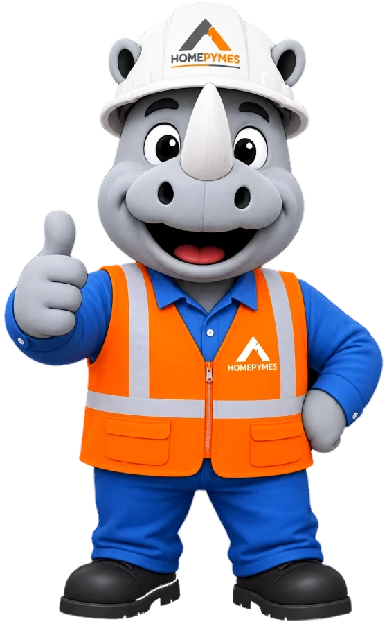

Así se ve el módulo una vez que el equipo lo usa: el calendario con un mes de actividades, los reportes de salida con su dinero, los videos del Estudio TikTok, las marcas y el reporte del mes. El hilo del ejemplo es una activación con una marca, desde que se agenda hasta que aparece en el reporte.
Datos de demostración. Personas, lugares y marcas son inventados. No es información de producción.